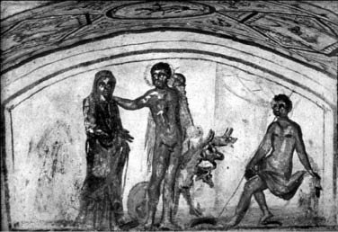

Kral Pelyas'ın (Pelias) kızı Alkestis'in güzelliği ve bunun yanında her konudaki özverili davranışları dillere destandı... Bu yüzden onu eş olarak isteyen adaylar, sarayın o geniş avlularına bile sığışamaz oldular! Haliyle damat seçimi konusunda işin içinden çıkamayan kral Pelyas, kendince bir yöntem uygulamaya karar verdi: Gelin arabasına bağladığı bir aslanla bir yabandomuzunu birlikte koşturmayı başarabilen adaya kızını vereceğini duyurdu.
Troya savaşına katılan, Kalidon'da düzenlenen canavar avına çıkan Elestino kralı Admetos da damat adaylarından biriydi. Ve Admetos'a bazı tanrıların kol-kanat gerdiği de çok kimselerce bilinirdi. Örneğin tanrı Apollon onu çok severdi. Ve bu aşırı sevginin nedeni epeyce eski bir zamana dayanıyordu...
Dillere destan olduğu gibi tanrı Apollon; çektiği çilelerle, toprağa ve ışığa olan bağlılığıyla dünyamızdaki insanlara çok yakın sayılırdı... Zaten Tanrılar Ülkesi Olimpos'ta da fazla oturmazdı o. Dünyamızda avlanmak, şiirler yazıp okumak, onları ezgilere dönüştürmek, sık sık âşık olmak onun en bilinen özellikleriydi. Ne var ki Apollon; anası Leto'nun Baştanrı Zeus'la olan yasadışı aşkından dünyaya geldiği için Baştanrı'nın karısı Hera ona çok kızıyordu. Bu yüzden bir gün tanrıça Hera'nın üstüne saldığı Piton denen canavar yılanı öldürdü Apollon. Geleneklere göre de öldürdüğü bu kutsal yılanın günahından arınması için tanrılar onu kral Admetos'un sarayına on yıllığına köle olarak gönderdiler! Konuksever kral Admetos, tanrı Apollon'a çok iyi davrandı. Apollon da cezasını çekmek üzere hiç gocunmadan kralın tarlalarıyla ilgilenmeye ve sürülerine çobanlık etmeye başladı. Sürülerini otlatırken dağlardaki aslanlar, ayılar, geyikler ve de kuşlar onun flütünden döktürdüğü ezgilere dalıp giderlerdi. Ve onun ezgileriyle dillendirdiği güzellikler, dünyamızda aynen gerçekleşirdi. Olimposlu tanrılar bile onun musiki ve şiirle şekillendirdiği dünyamızı kıskanmaya başlamışlardı. Tanrı Apollon süresi dolunca yeniden Olimpos'a döndü... İşte güzel Alkestis'e talip olan kral Admetos, bu eski dostluğa güvenip tanrı Apollon'dan yardım diledi. Sonuç olarak Admetos, gelin arabasına bir aslanla yabandomuzu koşma sınavını, dostu tanrı Apollon'un yardımıyla başardı.
Düğün şölenlerine baş konuk olarak katılan tanrı Apollon; yaşam süresini belirleyen ve Moyralar (Moiralar) denen üç tanrıçayı, Admetos'un sarayına buyur etti. Sırf onlardan dostu kral Admetos adına "uzun bir yaşam armağanı" koparabilmek için!.. Yemek sırasında müzisyen tanrı Apollon, liriyle en güzel bestelerini çaldı konuk ettiği tanrıçalara. Kralın yıllanmış nefis şaraplarından sundu onlara... Sonunda şarap ve müziğin etkisiyle kendilerinden geçen tanrıça Moyralar; düğün armağanı olarak kral Admetos'a çok uzun sürecek bir yaşam sunmaya karar verdiler. Ne var ki bir koşul vardı bu uzun yaşam armağanında: Ölüm tanrısı gelip kralın kapısını çaldığında, ya annesinin ya babasının ya da güzel karısı Alkestis'in onun yerine ölmeyi kabul etmesi gerekiyordu!..
Geçen zaman içinde kral Admetos'la kraliçe Alkestis'in iki çocukları oldu ve gitgide yaşlanan kralın kapısını da ölüm tanrısı gelip tıklattı bir gün. Kral, bir ayakları zaten çukura girmiş anne-babasına açtı durumu. Ne var ki ikisi de oğullarının yerine ölmeyi kabul etmedi. Ama karısı güzel Alkestis; yaşam dolu cıvıl cıvıl gençliğine karşın, toplumun erkek üstünlüklü geleneğine uygun olarak, kocasının isteğine boyun eğmek zorunda kaldı! Bencil ve yaşlı kocası kral Admetos'un daha uzun süre yaşaması uğruna ölmek üzere, çocukları ve kadın yardımcılarıyla helalleşti; onlara veda etti. Saraydaki bütün yakınları ve çocukları, kraliçe Alkestis'in bu anlamsız ve zamansız ölme kararına çok ağladılar. Kral Admetos da onunla vedalaşmaya geldiğinde, bu durumdan çok üzgün olduğunu, artık güzel karısının ölümünden sonra kendisi için her şeyin biteceğini; bundan böyle kendi yaşamının da bir tadı kalmayacağını söyledi! Gene bundan böyle dünyanın bütün hazlarından uzak duracağı yollu bir niyeti olduğunu da ekledi sözlerine. Alkestis bir süre daha yaşlı kocası kralın bu yollu dokunaklı sözlerini dinledikten sonra, yalnız başına sessizce odasına çekildi. Çok geçmeden güzel Alkestis'in odasından çok acı ve keskin bir çığlık yükseldi! Sonra da saray, daha önceleri hiç görülmedik bir sessizliğe gömüldü...
Kralın dostu olan ünlü kahraman Herakles; Alkestis'in gömüldüğü gün, olup bitenlerden habersiz, öylesine saraya geldi. Akşam yemeği sırasında güzel kraliçenin ölümünü duyunca da çok üzüldü. Hemen apar topar yeraltındaki Ölüler Ülkesi'ne koştu... Aradan öyle pek fazla zaman geçmemişti ki Herakles, güzel kraliçe Alkestis'i alıp saraya getirdi... Çocukları ve hizmetçileri, büyük bir coşku ve sevinçle, sarılıp sarılıp öptüler Alkestis'i... Ne var ki karısının yeniden dünyaya dönüşü, kral Admetos'u hiç sevindirmedi. Çünkü artık bu kez kendisinin ölmesi gerekiyordu!..
Tabii bundan sonra da Alkestis, haksız bir "egemen erkek geleneği" uğruna ölürken attığı o son pişmanlık çığlığının acısını çıkarmak üzere; hele Ölüler Dünyası'nı da görüp geldikten sonra, dünyamızdaki yaşamına ve özgürlüğüne dört elle sarıldı. Kadın ve erkek ayrımcılığının çökertilmesi için onlarla el ele oldu.

Herakles, Alkestis'i Ölüler Ülkesi'nden geri getiriyor
Böylece özgür Alkestis, insanlığın Altınçağını şekillendirecek kadın ve erkek eşitliğinin en canlı savunucusu ve öncüsü olan bir simgeye dönüştü...